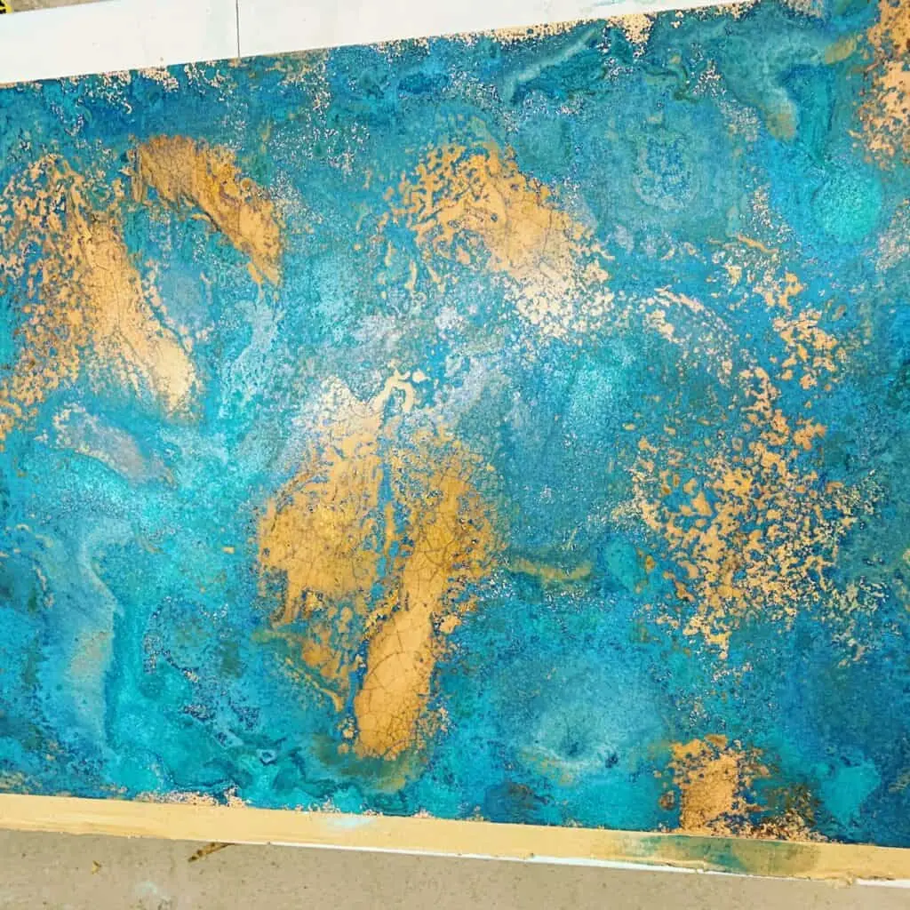

We can add an aged metal patina to copper or brass items such as tabletops, counter tops, wall panels, furniture items, metal screens, signs, sculptures and more. We can also add a brushed finish to various types of metal.

Our Clients
We regularly work with interior designers, architects, homeowners, business owners and anyone looking for a unique piece. We would be happy to work with you too!

Get in touch
If it’s made of copper or brass, we can probably add a unique patina to it. Contact one of our team for a free personalised quotation!
Get in touch for a bespoke quote .
Handcrafted aged metal
All metals that pass through our patina finishing service are aged by hand by expert craftsmen. This gives you the freedom to choose the exact tone and depth of colour you want.
All aged metal pieces will be artificially aged by hand and then sealed in tough lacquer. The lacquer is designed to stop the ageing process and protect the metal.
Aged copper finishes
Aged copper is one of the warmest, most flexible metals around and is ideal for interior décor. Combine beauty with functionality with our patina finishing service.
Aged copper finishes include:
- Ayrshire finish – Relaxed, light copper patina with small specks of verdigris throughout
- Cheshire finish – Rich, natural colours with that timeless quality of aged metal
- Hertfordshire finish – Luxurious effect with larger areas of verdigris offering real depth
- Northumberland finish – Swirls of colour with multiple layers of copper and verdigris
Multiple pieces will be aged together for a cohered look and then sealed inside tough gloss lacquer to protect the metal.
Aged brass finishes
Aged brass is a lovely material with similar depth and character to copper but with a completely different feel. We can achieve two distinct looks with our patina finishing service.
- Somerset finish – Deep, lustrous aged brass with a multi-layered aged patina
- Wiltshire finish – Lighter, more easygoing aged brass finish with speckles throughout
Aged brass pieces will be aged to achieve the desired look and then sealed in a robust lacquer to provide protection for the finish.

If you can dream it, we’ll make it.
Bars, balustrades, staircases, worktops, cladding and pieces that don’t have a name yet. Our designers and craftspeople work in brass, copper, zinc and steel, and alongside wood.